Թեստ 58
30:00
1. Քանի՞ խաչմերուկ կա այս նկարում
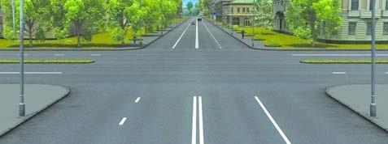
2. «Ճանապարհային երթևեկության անվտանգության ապահովման մասին» ՀՀ օրենքի համաձայն` մերձակա տարածքից ելքը դեպի ճանապարհ համարվու՞մ է արդյոք խաչմերուկ:
3. Ավտոբուսների շահագործումն արգելվում է, եթե՝
4. Տրանսպորտային միջոցների շահագործումն արգելվում է, եթե`
5. Եթե մտադիր եք խաչմերուկում կատարել հետադարձ, ո՞ր տրանսպորտային միջոցին պետք է զիջեք ճանապարհը:
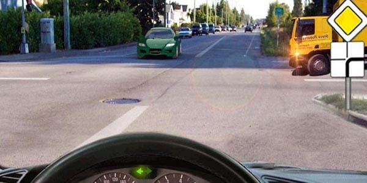
6. Ի՞նչ են ցույց տալիս նշված ճանապարհային նշանները:
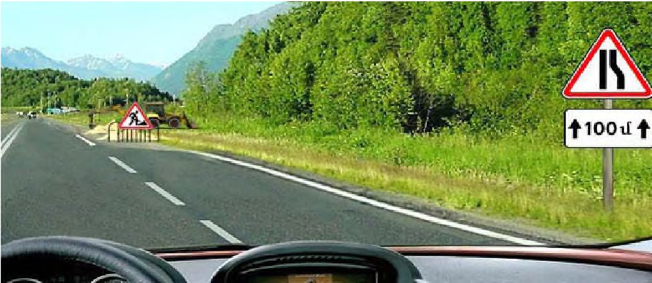
7. Կարմիր ավտոմոբիլը խաչմերուկը կանցնի`
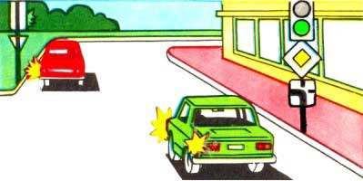
8. Պարտավոր ենք արդյո՞ք այս իրավիճակում զիջել հանդիպակացից մոտեցող ավտոմոբիլի վարորդին:
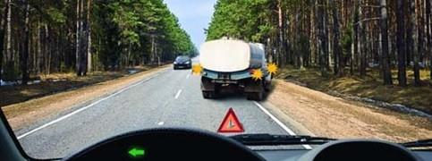
9. Թույլատրվո՞ւմ է աջ բակը մտնել հետընթաց կատարելով նշված իրադրությունում
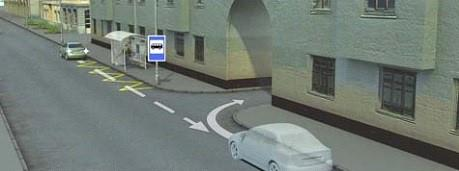
10. Եթե կարգավորողի աջ ձեռքը պարզված է առաջ, ապա նրա ձախ կողմից ոչ ռելսագնաց տրանսպորտային միջոցների երթևեկությունը թույլատրվում է`
11. Որ տրանսպորտային միջոցի վարորդն է խախտել կայանման կանոնները:
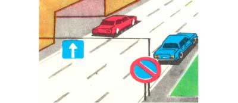
12. Թույլատրվու՞մ է արդյոք մինչև 12 տարեկան երեխաների փոխադրումը մոտոցիկլի հետևի նստատեղին։
13. Կայանումը նշված վայրում
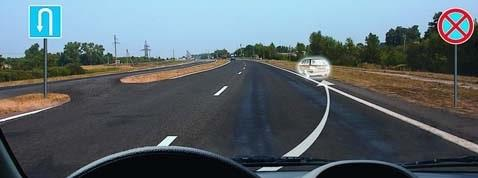
14. Ո՞ր տրանսպորտային միջոցների վարորդների վրա է տարածվում նշանների ազդեցությունը
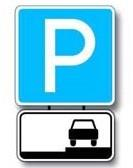
15. Այս իրադրությունում
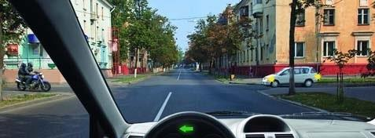
16. Այս իրավիճակում երթևեկությունը
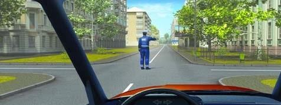
17. Վազանցն արգելվում է`
18. Ի՞նչ է արգելում այս գծանշումը
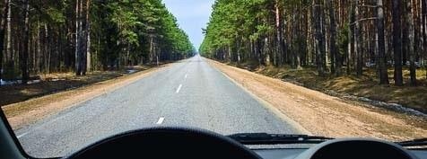
19. Այս իրադրությունում
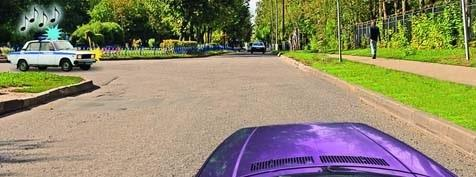